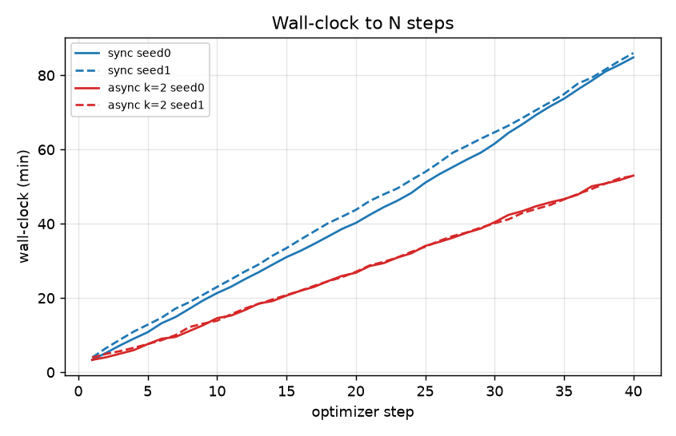
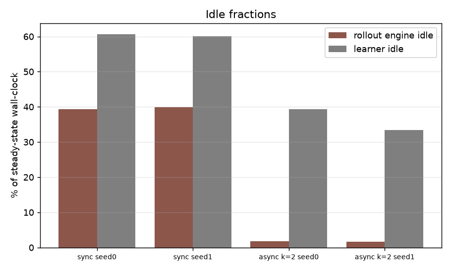
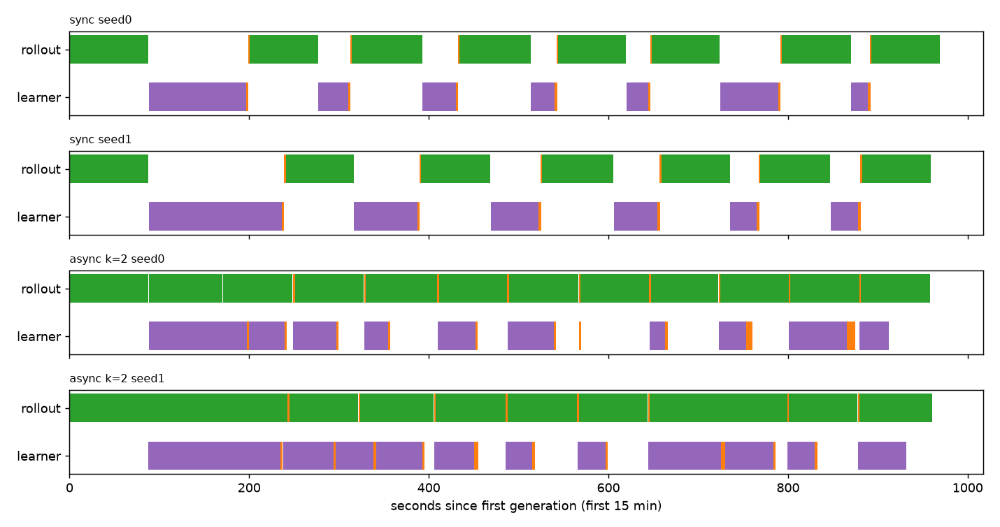
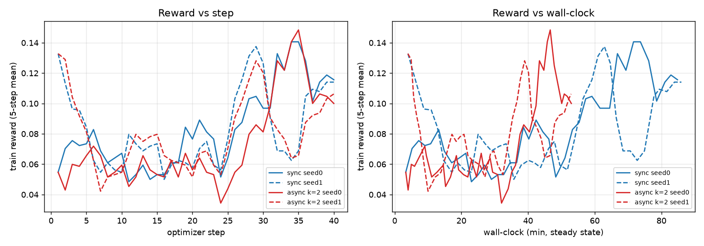
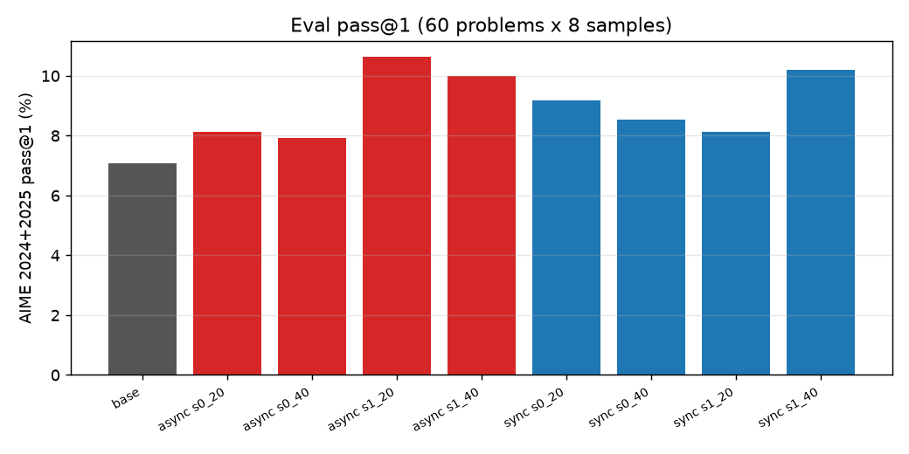
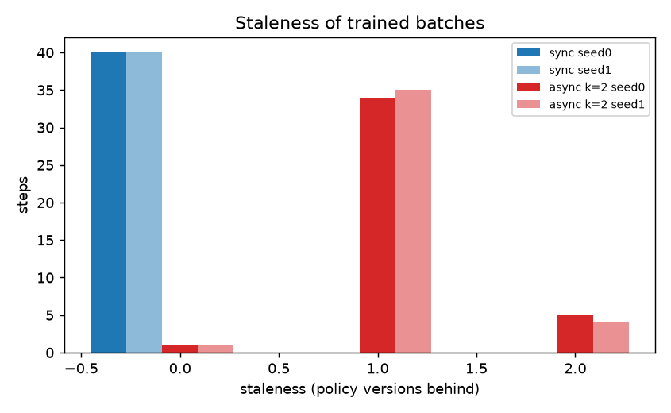

TPU Builders study
Async vs sync RL rollouts on TPU v6e
A controlled GRPO comparison on Qwen3.5-2B / AIME: overlapping generation and learning with bounded staleness cuts wall-clock by 1.61× without a measurable quality gap at this scale — the same systems thesis as Miles and PyTorch Conf async-RL talks, measured on TorchTPU + vLLM.
Summary
TLDR
Bottom line. Async keeps the rollout engine busy while the learner trains. Throughput rose from ~2,900 to ~4,700 gen tokens/s. AIME 2024+2025 pass@1 (60 problems × 8 samples, mean of 2 seeds) stayed within noise (async − sync at step 40: −0.4 pp, 95% CI −2.1 to +1.2). Base model was 7.08%. This is a short, weak-signal run: the speed result is solid; “equal quality” means no detectable difference at this scale, not long-horizon equivalence.
Method
Setup
| Model | Qwen/Qwen3.5-2B, non-thinking chat template |
|---|---|
| Hardware | 1× ct6e-standard-4t (TPU v6e-4), Flex-start, asia-northeast1-b. Sync and async of each seed ran concurrently on chip pairs 0/1 and 2/3. |
| Stack | vllm/vllm-torchtpu:v0.32.0 — torch 2.13, torch_tpu 0.2, vLLM 0.32 |
| Data / algo | Train AIME 1983–2023; eval AIME 2024+2025. GRPO with exact boxed-answer match reward. 16 prompts × 8 samples, max 3,072 new tokens, 40 steps, seeds 0 and 1. |
| Loss | Truncated importance sampling: w = min(exp(logp_cur − logp_beh), 2), detached; token-mean over nonzero-advantage sequences. |
| Async rule | Batch b trains at step b under policy version b. Rollout may start batch b once version ≥ b−k (k=2). No weight snapshots stored; learner recomputes log-probs; weights pushed as safetensors on /dev/shm (~1.8 s in-place vLLM reload). Sync is the same code with k=0. |
Measurements
Results
Speed and utilization
| Run | Wall to 40 | s/step | Gen tok/s | Rollout idle | Learner idle |
|---|---|---|---|---|---|
| sync (mean) | 85.4 min | 128.1 | 2,902 | 39.5% | 60.4% |
| async k=2 (mean) | 53.0 min | 79.5 | 4,698 | 1.7% | 36.4% |
| speedup | 1.61× | ||||



Learning quality
Train-reward curves overlap step-for-step. Eval pass@1 (AIME 2024+2025 combined):
| Step 20 | Step 40 | |
|---|---|---|
| sync (mean of 2 seeds) | 8.65% | 9.38% |
| async k=2 | 9.38% | 8.96% |
| base | 7.08% | |
async − sync at step 40: −0.4 pp (95% bootstrap CI over 60 problems: −2.1 to +1.2). Trained − base at step 40: +2.1 pp (−0.2 to +4.5).


Staleness and the importance correction
Generation is the bottleneck, so the learner is usually one version ahead. Behavior→current KL was the same in sync and async (~3.4–3.7×10⁻⁴): the gap is mostly vLLM fp8 KV vs bf16 trainer numerics, not policy lag. Truncated IS is needed in both modes.

Limits
Caveats & cost
- Short / weak signal. 40 steps; only ~3.5 of 16 groups per batch carried gradient; ~88% of samples hit the 3,072-token cap in non-thinking mode.
- Unbalanced chips. 1 rollout + 1 learner leaves ~36% learner idle even in async. A 3:1 split would likely raise the speedup further.
- Learner MFU is low (~3% eager). torch.compile failed on Qwen3.5 Gated DeltaNet view-stride errors.
- Zone. Preferred Spot/Flex zones were exhausted; all numbers are from asia-northeast1-b Flex-start.
Cost: ≈ $22.1 for 4.09 h at $5.40/h Flex-start (including setup). Sync ≈ $3.9 and async ≈ $2.5 per 40-step run on 2 chips. Compile-cache bucket (~3.8 GB) kept on purpose.
Bibliography
References
- Yuan, Yueming. “Miles: RL post-training for the new era of scale and workloads.” PyTorch Conference 2026 (talk). Also: RadixArk / PyTorch Blog, “Miles: A PyTorch-Native Stack for Large-Scale LLM RL Post-Training,” 30 Jun 2026. Talk slides (PDF) · Blog post.
- Pasqualin, Lucas; Pintz, Danielle; Wang, Allen; Afzali, Amir. “TorchStore: What We Learned Building Distributed Storage Solutions for AsyncRL.” PyTorch Conference Europe 2026, 7 Apr 2026, Paris. Session page · meta-pytorch/torchstore.
- PyTorch Team. “Introducing torchforge – a PyTorch native library for scalable RL post-training and agentic development.” PyTorch Blog, 23 Oct 2025. Blog post.
- Hugging Face TRL. AsyncGRPOTrainer / asynchronous GRPO (experimental): background vLLM rollouts, max_staleness, NCCL weight sync. See also agentic RL sessions at PyTorch Conference North America 2026. huggingface/trl · NA 2026 session roundup.